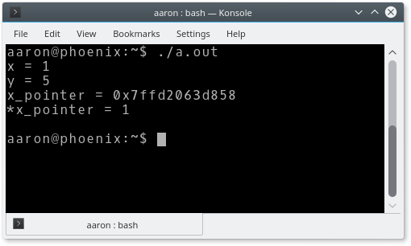
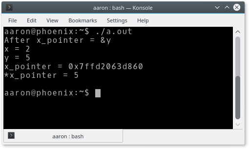
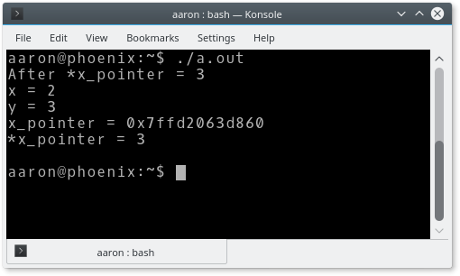

CS 2150 Roadmap
Data Representation | Program Representation | |||||
| string int x[3] char x 0x9cd0f0ad 01101011 |
Objects Arrays Primitive types Addresses bits |
Java code C++ code C code x86 code IBCM hexadecimal |
High-level language Low-level language Assembly language Machine code |
|||
using Directive
- Similar to Java's import
- Uses a namespace, which is somewhat similar to a Java package
- Allows the programmer to not have to type the full namespace name each time
|
|
Error comparison
| g++: |  |
| clang++: |  |
Declaring mutually
recursive functions
Source code: evenodd.cpp (src)
|
|
Pointer Variables
Source code: pointers.cpp (src)
|
|
x_pointer = &x
*x_pointer = 2
x_pointer = &y
*x_pointer = 3
Pointer Pitfalls: Uninitialized Pointers
- Cause runtime errors
int n = 30; int * p; *p = n; //ERROR!!!- p does not have a valid memory address!
- A common initializer value used by programmers is NULL
int *p=NULL; // better code, then add code to check // for NULL value
swap()
void swap(int * x, int * y) {
int temp = *x;
*x = *y;
*y = temp;
}